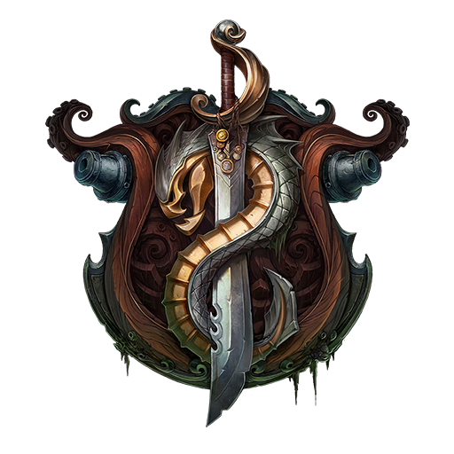

Overview
Purpose
The White Water Rafting website is your digital gateway to the heart-pounding world of river adventure. Our mission is to immerse you in the thrill and wonder of white water rafting while serving as your go-to hub for planning the most epic river journeys. Whether you're a seasoned river rat in search of your next big splash or a newcomer eager to plunge into the exhilarating world of rafting, our website is your ticket to ride.
Audience
Our website is designed for those who live for the rush of the river and the wild beauty of untamed waters. We're here for: Adventure Addicts: Folks who live for excitement, crave the rush of rapids, and thrive on conquering the wildest river challenges. Nature Aficionados: Nature lovers who can't resist the call of pristine waterways, where they can soak in stunning scenery while navigating the thrilling twists and turns. Crews and Tribes: Groups of friends, families, and adventure squads who want to bond, share unforgettable moments, and tackle the rapids together. Travel Explorers: Travelers seeking unforgettable, off-the-beaten-path experiences in the beautiful destinations where we operate. Rookies to River Legends: Whether you're brand new to rafting or a veteran of countless expeditions, we're here to introduce you to the sport, improve your skills, and help you become a river legend. With our website, we aim to be your ultimate rafting companion, offering all the info you need, from booking the perfect adventure to connecting with a vibrant rafting community. So, dive in, paddle hard, and get ready for the ride of your life!
Branding
Website Logo
Style Guide
Color Palette
Palette URL:
https://coolors.co/002147-008080-aa0000-ffd700-008080| Primary | Secondary | Accent 1 | Accent 2 |
|---|---|---|---|
| #002147 | #008080 | #AA0000 | #FFD700 |
Typography
Heading Font: [Cinzel]
Paragraph Font: [Roboto]
Normal paragraph example
Rafting in Bligewater is an exhilarating adventure you won't want to miss. With its wild rapids, stunning landscapes, and the thrill of exploring Bilgewater's unique waterways, it's an unforgettable experience for adventure seekers. Whether you're craving excitement or just want to soak in the scenery, Bligewater's rafting tours offer a chance to connect with nature and uncover the region's mysteries.
Colored paragraph example
As you navigate the treacherous waters of Bligewater, you'll also get a taste of the region's rich history and vibrant culture. From the tales of legendary pirates to the bustling port cities along the way, every bend in the river reveals a new facet of this captivating world. So, grab your paddle, embrace the adrenaline, and embark on a rafting journey through Bligewater that promises excitement, beauty, and a deeper connection to this fascinating realm.
Navigation
Site Map
Wireframes
Home